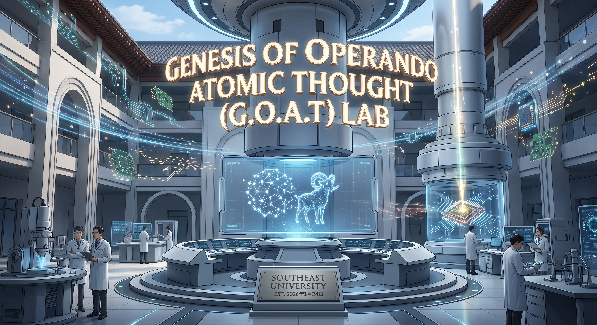

Prof. Qiubo Zhang is a Professor and Ph.D. Supervisor at the School of Integrated Circuits, Southeast University. He is a recipient of the National Overseas High-level Talent Program and the Distinguished Postdoc Award from Lawrence Berkeley National Lab (LBNL).
With extensive experience from UC Berkeley and LBNL, his group focuses on the atomic-scale dynamics of electrified solid-liquid interfaces and the synthesis of high-entropy alloys. He has published over 40 papers in top-tier journals including Nature, Nature Communications, and Science Advances.
Loading latest updates...